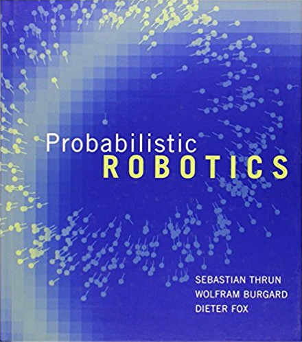

Problem Domain Books

Speech and Language Processing, 2nd Ed.
Danieal Jurafsky, James H. Martin
This book introduces important concepts related to word processing and speech recognition. It reviews topics such as word edit distance, speech synthesis, and algorithms for processing relationships among words.

Probabilistic Robotics
Sebastian Thrun, Wolfram Burgard, Dieter Fox
We're not actually using this book but it's a good book.